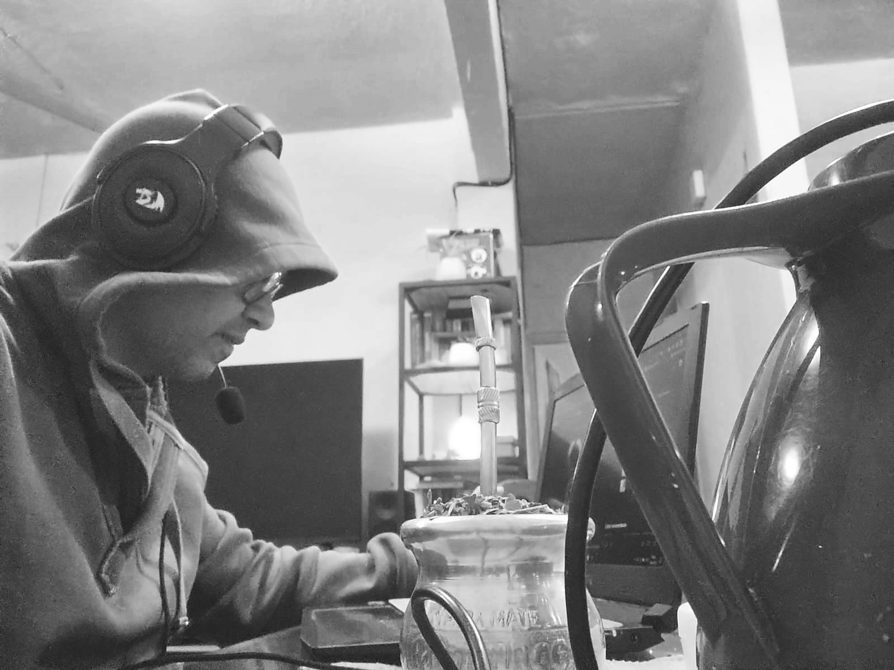

Facundo Pineda
Nombre: Facundo Pineda
Perfil: Desarrollador Web Full-Stack Python
Email: facupineda30@gmail.com
Telefono: 3764877280
Skills
Acerca de mi
Como Analista de Sistemas, mi objetivo es transformar desafíos empresariales en soluciones tecnológicas eficientes. Me especializo en analizar, diseñar e implementar sistemas de información que optimizan procesos y satisfacen las necesidades específicas de cada cliente.
Actúo como el puente entre los usuarios y el equipo técnico, traduciendo requerimientos complejos en especificaciones claras. Mi objetivo es asegurar que la solución final no solo sea funcional, sino también intuitiva y escalable.
Esta base analítica complementa mi trabajo como desarrollador, permitiéndome crear aplicaciones robustas y bien fundamentadas que aportan un valor real y medible a cada proyecto.
Resumen
Un resumen de mi trayectoria profesional y académica, destacando mi formación y experiencia en el desarrollo de soluciones tecnológicas.
Resumen
Facundo Pineda
Analista de Sistemas y Desarrollador Full-Stack con una sólida capacidad para analizar problemas complejos y diseñar soluciones de software eficientes. Experiencia en el ciclo de vida completo del desarrollo, desde la recopilación de requisitos hasta la implementación y el mantenimiento.
- Posadas, Misiones, Argentina
- 3764877280
- facupineda30@gmail.com
Educación
Analista de Sistemas
2020 - 2022
Instituto de Estudios Suiperiores Argentino (I.E.S.A), Posadas, Misiones
Formación integral en análisis, diseño, desarrollo e implementación de sistemas de información, con énfasis en la optimización de procesos de negocio.
Experiencia Profesional
Desarrollador Web Full-Stack / Analista de Sistemas
2024 - Presente
Freelance
- 2023 Sistema Pos (App de Escritorio) Minimercado Catriel y Caro .
- 2024 E-commerce Yerba Mate Amanecer.
- 2024 Landing page Indumentaria Cocoy.
- 2025 Guia Digital para la Provincia de Misiones contactos.net.ar.
- 2026 Fitness Gym, Sistema ERP(Enterprise Resource Planing), "Herramienta modular escalable para la administración inteligente de gimnasios. Automatiza el ciclo de vida completo del socio: desde el alta digital y la asignación de rutinas, hasta el control de inventario y mantenimiento de maquinas y la apertura y cierre de caja diario. Una solución robusta que transforma datos operativos en indicadores de rentabilidad (KPIs, Key Performance Indicators)." Actualmente en desarrollo
Servicios
Ofrezco soluciones tecnológicas, analizando y diseñando sistemas para optimizar procesos y mejorar la eficiencia de su negocio.
Análisis de Requerimientos
Traducción de las necesidades del negocio en especificaciones técnicas claras y detalladas para el desarrollo de software.
Diseño de Sistemas
Creación de arquitecturas de software robustas y escalables que se alinean con los objetivos del cliente y la tecnología disponible.
Optimización de Procesos
Análisis de flujos de trabajo actuales para identificar cuellos de botella y proponer mejoras a través de soluciones tecnológicas.
Desarrollo y Mantenimiento
Creación de aplicaciones a medida y soporte continuo para asegurar su funcionamiento óptimo y su evolución futura.
Consultoría Tecnológica
Asesoramiento estratégico para la adopción de nuevas tecnologías y la mejora de la infraestructura de T.I existente.
Documentación de Sistemas
Elaboración de manuales técnicos y de usuario para facilitar la comprensión, el uso y el mantenimiento de los sistemas.
Demostraciones en Video
Visualizá en acción algunos de mis proyectos más destacados a través de estas demostraciones en video.
Demostración de Landing Page
Breve demostracion de una pagina para mostrar productos.
Sistema pos
Sistema Pos App de escritorio.
E-commerce Yerba mate Amanecer
Pequeña demostracion de un e-commerce.
Integración de Sistemas
Observa cómo se integran diferentes componentes de la solución para un funcionamiento cohesivo.
Preguntas Frecuentes
Aquí encontrarás respuestas a las dudas más comunes sobre mi forma de trabajo, costos y tiempos de entrega.
1. ¿Cuál es tu proceso de desarrollo de software?
Mi proceso comienza con un análisis detallado de tus necesidades para definir los objetivos del proyecto. Luego, diseño la arquitectura y la interfaz de usuario, seguido por la fase de desarrollo y programación. Realizo pruebas exhaustivas para asegurar la calidad y finalmente despliego la solución, ofreciendo soporte posterior.
2. ¿Cómo se determinan los costos de un proyecto?
El costo varía según la complejidad, el alcance y las tecnologías requeridas. Tras nuestra reunión inicial, te proporcionaré una cotización detallada y transparente que desglosa todos los costos asociados, sin cargos ocultos. Mi objetivo es ofrecer una solución de gran valor que se ajuste a tu presupuesto.
3. ¿Cuánto tiempo tomará completar mi proyecto?
El tiempo de entrega depende del tamaño y la complejidad del proyecto. Una vez que definamos todos los requerimientos, estableceremos un cronograma realista con hitos claros. Me comprometo a cumplir con los plazos acordados, manteniéndote informado sobre el progreso en cada etapa.
4. ¿Ofreces mantenimiento y soporte después del lanzamiento?
Sí, ofrezco planes de mantenimiento y soporte para garantizar que tu aplicación funcione de manera óptima y segura a largo plazo. Esto puede incluir actualizaciones, monitoreo de rendimiento y solución de problemas. Podemos discutir un plan que se adapte a tus necesidades.
5. ¿Puedo solicitar cambios durante el desarrollo?
¡Por supuesto! Entiendo que los requisitos pueden evolucionar. Utilizo metodologías ágiles que permiten flexibilidad para incorporar cambios. Cualquier modificación se evaluará para determinar su impacto en el cronograma y el presupuesto, y procederemos con tu aprobación.
Contacto
¿Tenés una idea o un proyecto en mente? No dudes en contactarme. Estoy acá para ayudarte a transformar tus requerimientos en una solución funcional.
Ubicación
Posadas, Misiones, Argentina
Teléfono
+54 3764877280
facupineda30@gmail.com